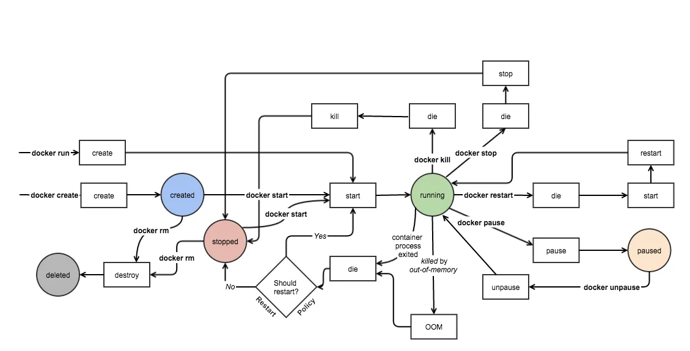

Toute donnée est stockée dans une structure de base de données. On parle de BDD pour désigner le stockage des données et
de SGBD pour désigner les éléments (système) qui sont mis à la disposition du développeur pour manipuler ces données.
Le langage SQL pour Structured Query Language (langage de requête structuré)
se décompose en plusieurs sous-ensembles :
- DDL Data Definition Language, qui se composent principalement des ordres CREATE, ALTER, DROP.
Il regroupe les ordres utilisés pour créer, modifier et supprimer les structures (index, tables, vues, etc.) de la base de données.
- DML Data Manipulation Language, qui se composent principalement des ordres SELECT, INSERT, DELETE, UPDATE.
Il regroupe les ordres utilisés pour manipuler les données dans la base.
- DCL Data Control Language, qui se composent principalement des ordres GRANT et REVOKE.
Il regroupe les ordres utilisés pour gérer la sécurité des accès aux données.
- TCL Transaction Control Language, qui se composent principalement des ordres COMMIT et ROLLBACK.
Il regroupe les ordres utilisés pour gérer la validation ou non de la mise à jour de la base de données.
Il existe plusieurs normes SQL. La norme SQL2 ou SQL92 est la plus importante.
C’est cette dernière qui est implémentée dans la majorité des SGBDR (système de gestion de base de données relationnelles).
Ainsi, chaque fournisseur de SGBDR a implémenté sa façon le langage SQL et a ajouté ses propres extensions.
I. Instruction Dockerfile
Des blablas ici, expliquant la structure client-serveur ou d'autres informations pertinentes.
1. Essai
Essai de contenu ici.
2. Non
Autre contenu ici.
II. Prise en main du client Docker
Text.

Text.
| Command |
Description |
Comment |
sudo apt install docker |
10.44.100.111 |
Staging-node1 |
sudo apt install docker |
10.44.100.115 |
cuda |
Text.
1. Les commandes système
Il s'agit des commandes qui sont relaties au Docker Engine dans son ensemble, soit pour piloter le démon,
soit pour obtenir des informations sur son fonctionnement.
2. Cycle de vie des conteneurs
Il s'agit d'un ensemble de commande pouvant influencer sur le cycle de vie d'un conteneur.
3. Interactions avec un conteneur démarré
Commande servant à interagir avec un conteneur démarré
4. Commandes relatives aux images
Commande qui permettent de manipuler des images Docker.
5. Interactions avec le registry
Il s'agit de commande d'intéraction entre le Docker Engine de l'hôte et les registries (DockerHub ou autre registry public ou privé).
III. Instruction Dockerfile
Text.